>>> 官网下载 <<<
蓝奏云下载:
Version: 25.0.8
Released: April 26th
运行平台: Windows 7/8.1/10
推荐教程:
设置视频:
分辨率设置成和游戏一样的 800x600, 帧率 30(常用) 或者 60(流畅).
如需捕获全屏则把分辨率设置成和当前显示器一致, 例如 1920x1080.
全屏捕获会消耗较多资源对电脑配置要求较高, 建议只捕捉游戏窗口.
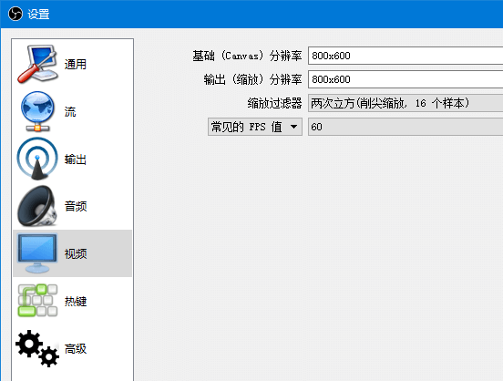
设置音频:
启用一个桌面音频设备 "默认", 默认捕捉扬声器输出, 戴耳机则是捕捉耳机输出.
需要录制麦克风的话在 麦克风/辅助音频设备 里选上要录的音频来源.
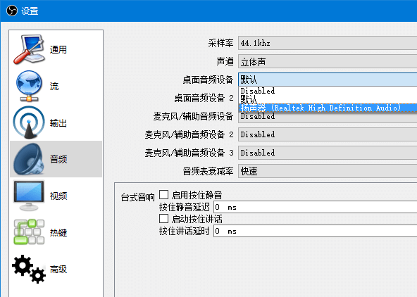
设置输出:
推流的码率和编码器.
录像的输出路径和质量.
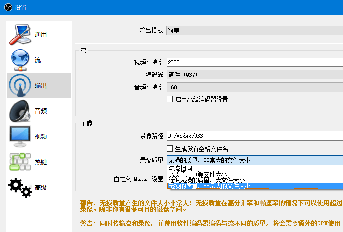
新建一个场景
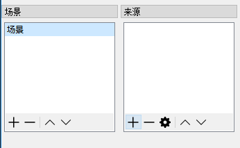
来源里点加号新建一个 "游戏捕获" 或者 "窗口捕获"
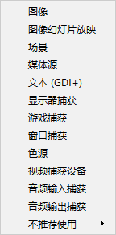
取个名字比如 "PVZ", 窗口里选游戏标题.
显示游戏画面即是捕获成功了, 确定. (捕获失败可以尝试用不同的显卡运行 OBS.)
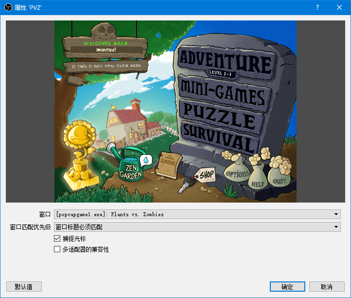
两个开关分别是显示和锁定.
可以捕获多个不同的输入来源, 并且调整它们的显示与否和图层位置.
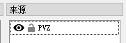
在主界面空白的地方右键开启或者关闭预览.
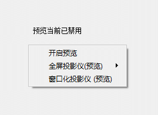
在没锁定的情况下可以在预览区拖动红色边框调整画面的位置和大小.
之前已经把背景设置成了 800x600, 游戏窗口也是这个分辨率, 因此能正好填充.
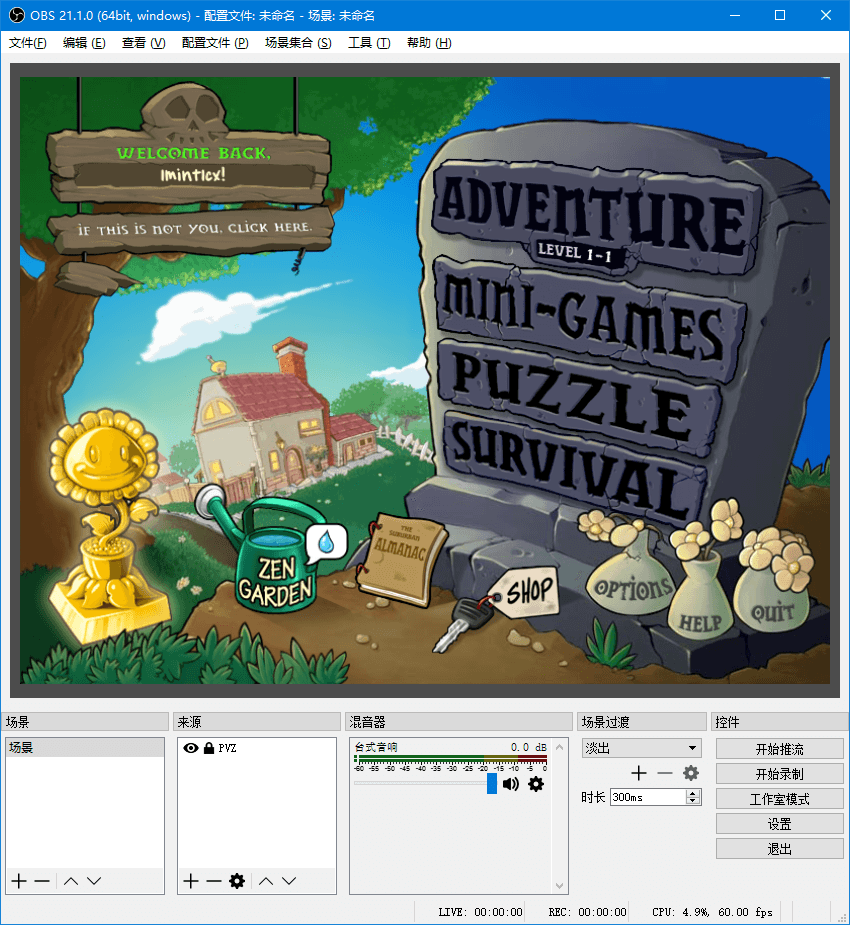
然后点右下角的开始录制就能录视频啦~~~
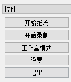
关于直播:
开播后找到推流地址和直播码.
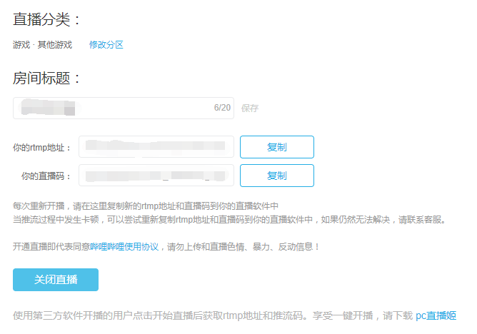
设置流类型为自定义, 填上刚刚获取的地址和直播码.
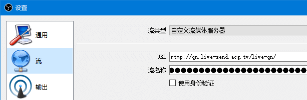
设置下推流码率和编码器.
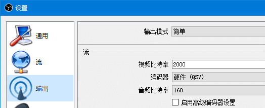
确定保存后点右下角的开始推流.